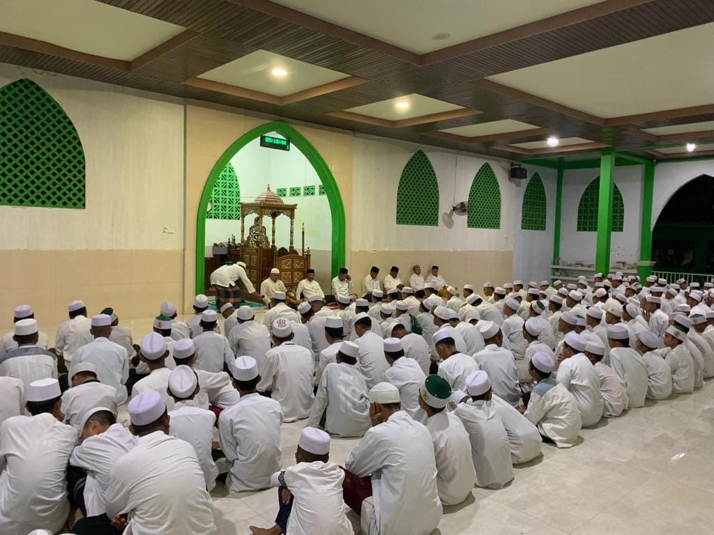
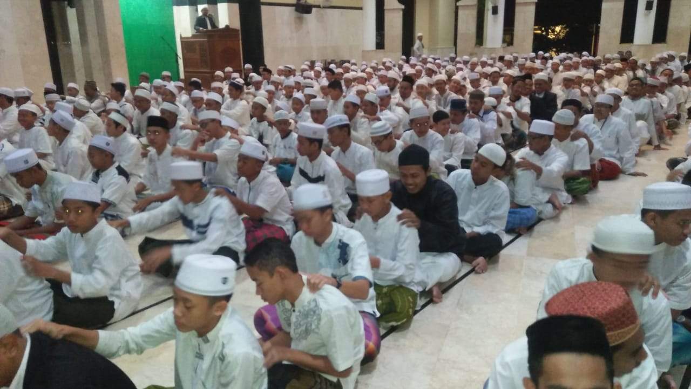
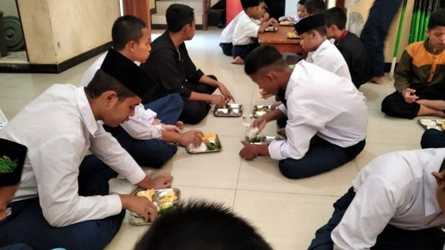
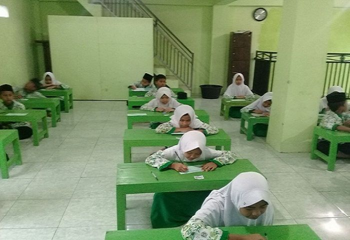
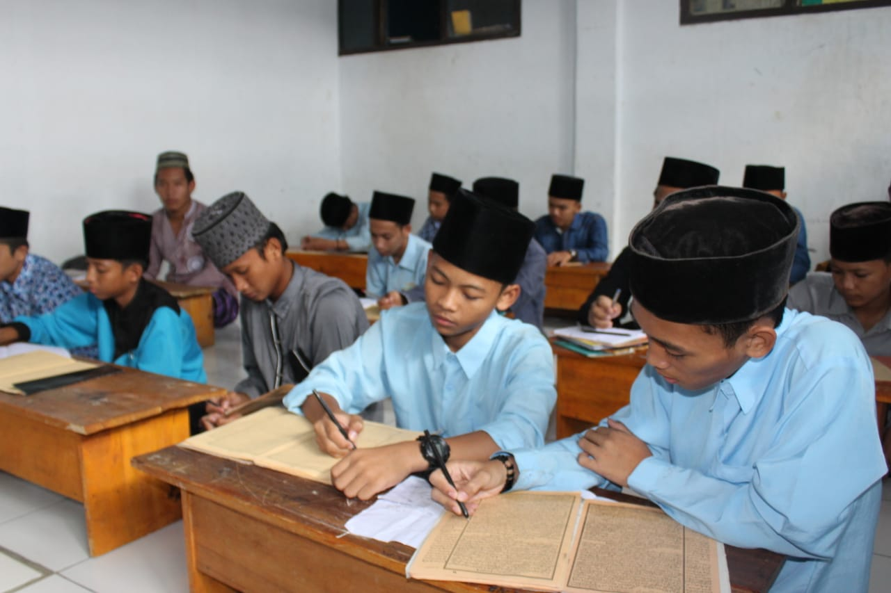
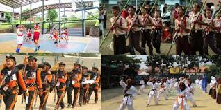
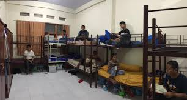

Madrasah Diniyah
Program pendidikan agama Islam yang komprehensif meliputi berbagai disiplin ilmu keislaman untuk membentuk pemahaman yang mendalam tentang ajaran Islam.
-
Fiqih & Ushul FiqihIlmu tentang hukum-hukum syariat Islam dan metodologi penetapan hukum dari dalil-dalilnya yang terperinci.
-
Tafsir & Ulumul Qur'anIlmu untuk memahami makna dan kandungan Al-Qur'an serta berbagai ilmu yang berkaitan dengan Al-Qur'an.
-
Hadits & Ulumul HaditsPembelajaran tentang perkataan, perbuatan, dan persetujuan Rasulullah SAW beserta ilmu yang berkaitan dengannya.
-
Tauhid & AkidahIlmu tentang keesaan Allah dan keyakinan-keyakinan pokok dalam Islam yang harus dipegang teguh oleh setiap Muslim.
-
Bahasa Arab & Nahwu ShorofPembelajaran bahasa Arab dan ilmu tata bahasa Arab (gramatika) untuk memahami teks-teks keislaman.
-
Tarikh IslamSejarah Islam mulai dari zaman Nabi Muhammad SAW hingga perkembangan Islam di berbagai belahan dunia.
Tahfidz Al-Qur'an
Program unggulan untuk menghafal Al-Qur'an dengan metode yang sistematis dan terbimbing oleh pengajar yang berpengalaman dalam bidang tahfidz.
-
Target hafalan 30 JuzProgram lengkap menghafal seluruh Al-Qur'an yang terdiri dari 30 juz dengan target waktu yang disesuaikan kemampuan santri.
-
Metode talaqqi dan muroja'ahTalaqqi adalah menyetorkan hafalan baru kepada guru, sedangkan muroja'ah adalah mengulang hafalan yang sudah disetorkan.
-
Tahsin bacaan & tajwidPerbaikan kualitas bacaan Al-Qur'an sesuai dengan kaidah tajwid dan makhrijul huruf yang benar.
-
Bimbingan hafalan individualSetiap santri mendapat pendampingan khusus dari guru tahfidz untuk memaksimalkan kualitas hafalan.
-
Setoran hafalan rutinJadwal setoran hafalan yang teratur setiap hari untuk memastikan progress dan konsistensi santri dalam menghafal.
-
Evaluasi berkalaPenilaian rutin terhadap kualitas dan kuantitas hafalan santri untuk memantau perkembangan dan memberikan motivasi.
Pendidikan Akhlak
Pembinaan karakter dan kepribadian Islami melalui pembiasaan akhlak mahmudah dalam kehidupan sehari-hari di lingkungan pondok pesantren.
-
Adab bergaul & bermasyarakatPembelajaran tentang etika dan tata cara bergaul yang baik dengan sesama sesuai tuntunan Islam.
-
Akhlak kepada Allah & RasulPembinaan sikap dan perilaku yang mencerminkan ketundukan kepada Allah dan kecintaan kepada Rasulullah SAW.
-
Etika kepada guru & orangtuaMengajarkan cara menghormati dan berbakti kepada guru dan orangtua sebagai bentuk penghormatan dalam Islam.
-
Pembinaan akhlak harianPembiasaan perilaku baik dalam aktivitas sehari-hari seperti kejujuran, kebersihan, dan kedisiplinan.
-
Keteladanan & uswah hasanahPembelajaran melalui contoh teladan yang baik dari para guru dan tokoh Islam sebagai panutan hidup.
-
Kajian kitab akhlakPembelajaran mendalam tentang akhlak melalui kitab-kitab klasik karya ulama seperti Ta'limul Muta'allim dan lainnya.
Kegiatan Keagamaan
Berbagai aktivitas keagamaan rutin untuk memperdalam spiritualitas dan mengamalkan nilai-nilai Islam dalam kehidupan sehari-hari.
-
Sholat berjamaah 5 waktuPelaksanaan sholat lima waktu secara berjamaah di masjid untuk membangun kedisiplinan dan kebersamaan.
-
Qiyamul lail & tahajudSholat malam sebagai bentuk ibadah sunnah untuk mendekatkan diri kepada Allah di sepertiga malam terakhir.
-
Dzikir & wirid ma'tsuratMengingat Allah melalui bacaan dzikir dan wirid yang diajarkan Rasulullah SAW di waktu pagi dan petang.
-
Istighosah & tahlilanPermohonan pertolongan kepada Allah melalui dzikir bersama dan pembacaan kalimat tahlil untuk memohon ampunan.
-
Kajian kitab kuningPembelajaran kitab-kitab klasik karya ulama salaf yang menjadi rujukan utama dalam keilmuan Islam.
-
Peringatan hari besar IslamPerayaan dan peringatan hari-hari besar Islam seperti Maulid Nabi, Isra Mi'raj, dan lainnya dengan berbagai kegiatan.
Jadwal Kegiatan Harian Santri
04.00 - 05.00
Qiyamul Lail & Sholat Subuh Berjamaah

05.00 - 06.30
Setoran Hafalan Al-Qur'an & Tadarus

06.30 - 07.00
Persiapan & Sarapan

07.00 - 12.00
Kegiatan Belajar Madrasah Diniyah

12.00 - 13.00
Sholat Dzuhur & Istirahat
13.00 - 15.30
Pembelajaran Sore & Kajian Kitab

15.30 - 17.00
Sholat Ashar & Kegiatan Ekstrakurikuler

17.00 - 18.30
Istirahat, Mandi & Persiapan Maghrib
18.30 - 19.30
Sholat Maghrib & Isya Berjamaah
19.30 - 21.00
Belajar Malam & Muroja'ah Hafalan
21.00 - 04.00
Istirahat Malam
